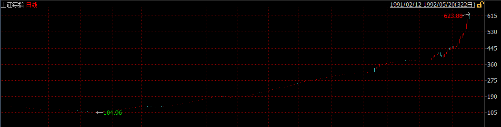
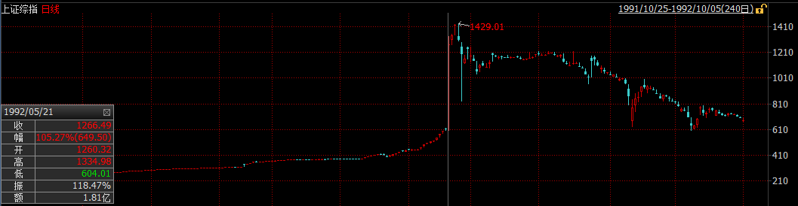
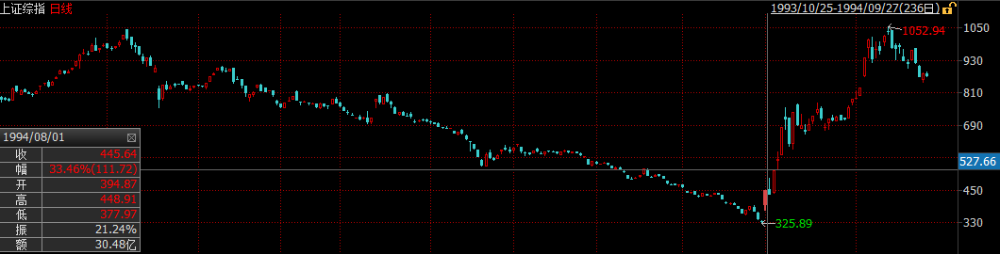
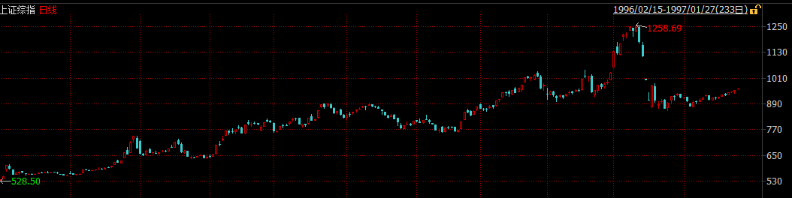
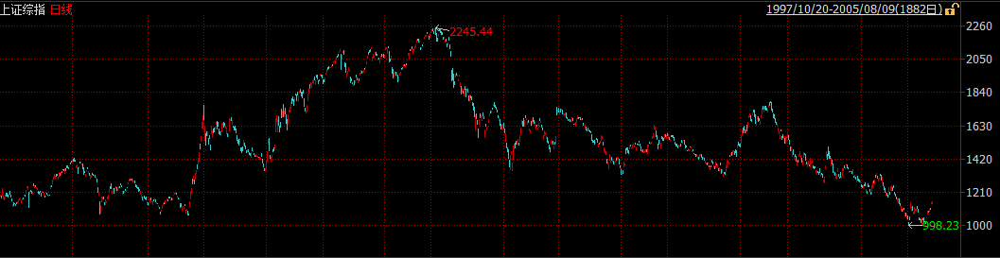
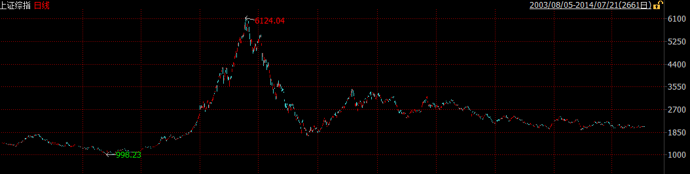

深圳证券交易所于1989年11月15日筹建，1990年12月1日鸣锣开市，深安达（ST国农）成为开业当天上市的唯一一家公司。与此同时，上海证券交易所于1990年11月26日由中国人民银行总行批准成立，同年12月19日正式营业，首批上市的八家公司被称为「老八股」（飞乐音响、延中实业（方正科技）、爱使股份、真空电子、申华失业（华晨集团）、飞乐股份、豫园商城、浙江凤凰）。
当时的社会对于这一究竟是「姓资」还是「姓社」犹豫不决，因而在最早的一批股票发行的时候。深发展和万科等深交所上市的第一批股票在发行期无人问津，最终不得不号召党员，甚至可以以折价的方式认购。1991年10月31日：首家B股深南玻B公开招股。这是中国股份制企业首次发行B股。1992年1月，一种叫「股票认购证」的票证首次出现在上海街头，向市民发售，谁会想到，就是一张售价仅30元的认购证，改变了很多人一生的命运。股票认购证的发行象征我国股份制改革的一个开端，证券市场从此进入了一个前所未有的高速增长期。

随着邓小平第二次南巡以及相关股票的价格不断走高，越来越多人发现参与股票交易有利可图。此外由于在早年阶段交易所为了控制风险，采取了严格的价格限制措施，日涨跌幅限制为1%，这加剧了股票市场供不应求的局面。于是抢购新股，抢购认购证成为了当时的常态，甚至在深圳发生了由于抢购新股引起的严重的踩踏事件，造成了不良的社会影响。1992年5月21日，上交所放开了仅有的15只上市股票的价格限制，引发股市暴涨。由于没有涨停板限制，沪市一日涨了105％。随后，股指连飚两日，25日，行情触顶，报1429点。

中国股市也正是从这一高点开始经历了滑落近80％，近乎关市的最惨痛一次熊市。1994年7月30日、人民日报发表证监会与国务院有关部门共商稳定和发展股票市场的措施，俗称「三大政策」（今年内暂停新股发行与上市，严格控制上市公司配股规模，扩大入市资金范围），引起八月狂潮。

1995年1月3日，中国股市开始实行T＋1制度。1995年2月23日，是国债期货市场开市以来行情变化最大，最激烈，形势最险峻的一天。327品种异常波动，尾市空方大笔封杀，令市场目瞪口呆，措手不及。上交所宣布，23日下午16时22分13秒以后的「327」品种的所有成交无效。该部分成交不计入当日成交量范围之内。事后查明，327事件是由少数交易大户蓄意违规，操纵市场，扭曲价格，严重扰乱市场秩序所引起的国债期货风波。1995年8月，外资直接购买北旅股份法人股，揭开了外资并购的序幕。
1996年的股市走出了一轮大的上升行情，全年基本上走出了单边上扬的走势，直至年底的疯涨，管理层的「十二道金牌」都没能拉住疯牛，直至人民日报的特约评论员文章出现，才拉住了疯牛，大盘出现连续两个跌停板，投资者重新趋于理智。

1997-2000年，由于中国经济尚处于相对封闭阶段，并未受到亚洲金融风暴的影响，加之经济增速迅猛以及互联网泡沫的刺激，中国股市继续高歌猛进，在2001年达到顶点。然而公司治理问题逐渐突出，国有股减持引起的市场担忧以及互联网泡沫的破灭逐渐成为新千年以来市场关注的焦点，中国股市也随即陷入了旷日持久的4年熊市，从2001年的2245点直至2005年的998点，上证指数累计点去了55.45%。

股权分置问题被普遍认为是困扰我国股市发展的头号难题。由于历史原因，我国股市上有三分之二的股权不能流通。由于同股不同权、同股不同利等「股权分置」存在的弊端，严重影响着股市的发展。2005年，《国务院关于推进资本市场改革开放和稳定发展的若干意见》明确指出应「积极稳妥解决股权分置问题」，提出「在解决这一问题时要尊重市场规律，有利于市场的稳定和发展，切实保护投资者特别是公众投资者合法权益」的总体要求。这项政策刺激了低迷已久的中国股市，随之而来的是中国股市历史上最大的一波牛市，中国股市在短短两年时间翻了6倍。好景不长，股权分置改革的负面效应开始逐渐显现，非流通股的上市使得股票供给急剧增加，加之金融危机的冲击，中国股市再次陷入漫漫熊途。

统计截至日期：2014年3月1日
2010年11月2日，上海市场单日成交金额3,092亿元，深圳市场单日成交金额2,350亿元。
1992年1月15日，上海市场单日成交金额31.50万元。
1991年4月20日，深圳市场单日成交金额2.27万元。
1992年5月21日，市场不再实行每天1%的涨跌幅限制加之当时股票供不应求，上证指数日涨幅达到105.27%，当周涨幅达146.16%，同样创下周涨幅之最。
1994年8月1日，管理层出台包括控制发行规模等若干救市政策，深证综指日涨幅达到31.29%，周涨幅达68.04%，同样创下周涨幅之最。
1995年5月23日，上证指数日跌幅达到16.39%
1991年11月18日，深证综指日跌幅达到18.63%
1996年12月15日-1996年12月20日，受交易所决定实行单日10%涨跌幅限制的影响，上证指数和深证综指周跌幅分别达到20.25%和25.84%
2008年9月19日，受印花税单边征收、汇金增持等利好消息影响，市场出现集体封死涨停的现象，至下午已经鲜有抛盘出现。当日上海共有747家、深圳共有654家股票涨停。
1998年5月6日上市，发行价仅1元的四川九洲上市首日涨幅高达3,590%
2012年12月14日，股权分置完成后ST华新(000010.SZ，深华新)由于无偿送转股的除权效应当日跌幅达70.67%
位列第二的是在金融危机期间停盘半年多的ST幸福(600743.SH，华远地产)当日跌幅达68.73%
2007年7月9日-2007年8月30日，ST金泰一口气连封47个涨停，股价由3.96元上升至25.31元，累计涨幅达539%
银广夏（000557.SZ）在2001年9月10日-2001年10月8日期间连续11跌停，股价从30.79元跌至6.35元，累计跌幅达79.37%。排在第二位的是赣州稀土注入预期落空的昌九生化，在2013年11月4日-2013年12月24日期间连封十个跌停。排在第三位的是乙肝疫苗梦破灭的重庆啤酒，在2011年12月8日-2011年12月20日期间连封十个跌停。
2012年11月2日，以2.58元低价发行的浙江世宝上市首日遭到爆炒，当日换手率达95.15%，在T+1的交易制度下，这意味几乎所有流通股在当天发生了交易。
ST重实2004年的每股收益为-14.08元。
*ST科健2005年半年末每股净资产为-11元。
2010年5月6日，海普瑞（002399.SZ）的发行价格为148元。
2010年12月27日，新研股份发行市盈率达150.82倍。
2007年12月发行的海隆软体(002195.SZ)中签率仅为0.0160937102%，平均而言需要6250个号，亦即312.5万股的申购量，按发行价计算将近3300万的申购资金才能中得一签(500股，5245元)。